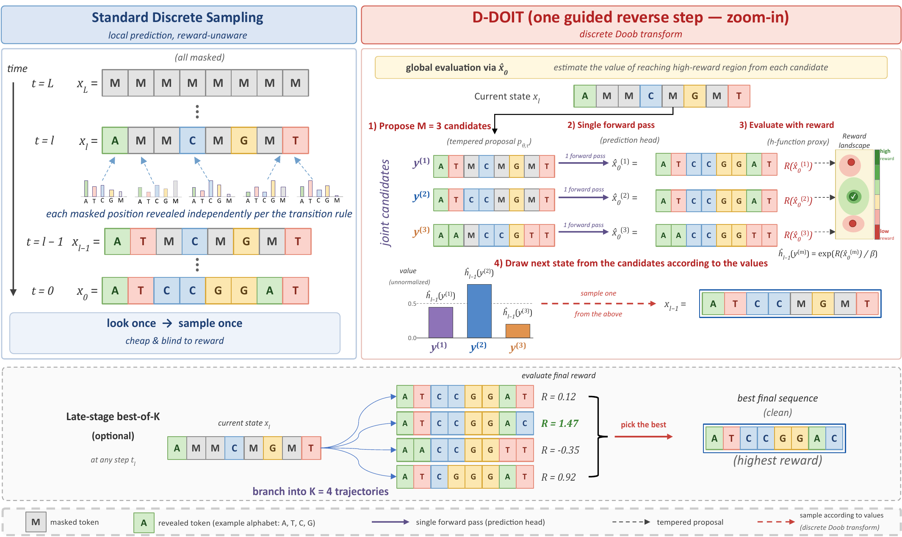

A good generator is only the beginning
Suppose we want a DNA enhancer that is active in one cell type, or an amino-acid sequence that fits a particular protein backbone. A pretrained generator gives us a powerful starting point: it has learned patterns in biological sequences. But the distribution it learned is not automatically the distribution our design task requires.
One option is to fine-tune the model for each new objective. Another is to generate many complete sequences and keep the best. D-DOIT asks a different question: can we use an evaluator to make better decisions during generation, while keeping every model parameter fixed?
Why discrete diffusion needs its own guidance
In masked discrete diffusion, generation begins with masked positions. A reverse process progressively reveals categorical tokens—DNA bases or amino acids—until a complete sequence emerges. These are discrete choices, rather than small movements through a continuous space.
D-DOIT, short for Discrete Doob-Oriented Inference-time Transformation, guides those choices directly. It adjusts the reverse transition probabilities using reward values from an evaluator. The evaluator can be a black box: the method does not need reward gradients or a new training loop.

The idea behind the sampler
We want to favor high-reward sequences without discarding the pretrained model’s distribution. Formally, the target multiplies the model probability of a clean sequence by an exponential reward weight:
Here, R scores a finished sequence, and β controls the strength of the reward tilt. The mathematical tool is Doob’s h-transform: it uses the expected future reward weight of a partial state to change the probability of reaching that state.
The exact future value is expensive to compute. It would require accounting for possible completions of a partially masked sequence. D-DOIT replaces that calculation with a practical estimate from the frozen model’s prediction head.
Propose. Complete and score. Reweight.
- Propose candidate next states. Draw a small set of possible next steps from the reverse process.
- Estimate where each could lead. Complete each candidate into a clean sequence using the prediction head, then evaluate that completion with the reward oracle.
- Choose a promising next step. Resample a candidate using estimated Doob weights and continue denoising from that partial state.
The completion helps evaluate a candidate; it does not mean the sampler must immediately accept that entire finished sequence. Guidance operates along the trajectory. An optional late-stage best-of-K refinement branches the trajectory near the end, spending extra computation where it can help resolve final choices.
The distinction between theory and implementation matters. The exact transform recovers the reward-tilted target when the true future values are available. Prediction-head estimates and finite candidate sets make the method practical, but they introduce approximation. More candidates alone cannot remove a systematic value-estimation error.
What changes in the experiments?
The paper studies three sequence-design settings. The results below are computational benchmark measurements, with the particular configurations and trade-offs kept visible.
| Design task | Reported result | How to read it |
|---|---|---|
| HepG2 enhancer design | D-DOIT-Q predicted activity: 6.19 ± 0.05; ATAC accuracy: 91.7 ± 0.9% | Activity and sequence-quality metrics are evaluated together. |
| Cell-type-specific enhancers | D-DOIT-Q specificity reward ΔR: 0.119 ± 0.063 | Target activity minus average off-target activity; motif correlation is 0.498 ± 0.070. |
| Protein inverse folding | D-DOIT joint success: 68.1 ± 3.5% | Success combines stability and structural criteria; structural fidelity remains a separate metric. |
On HepG2 enhancer design, D-DOIT-Q improves predicted activity over the reported training-based DRAKES reference, 6.19 versus 5.61, while its ATAC accuracy is slightly lower, 91.7% versus 92.5%. It also reports a 3-mer correlation of 0.894. The comparison is about a balance of properties, rather than a win on every column.
For cell-type specificity, the stronger D-DOIT-Q operating point increases ΔR relative to the lower-budget D-DOIT-LBOK-S setting, but reduces motif correlation from 0.648 to 0.498. In protein inverse folding, D-DOIT has the highest joint success among the methods in the reported table, while TDS has the better scRMSD value, 0.834 versus 0.872, where lower is better.
Training-free does not mean computation-free
Every candidate still costs model inference and a reward evaluation. The useful operating point depends on the number of candidates, the cost of the evaluator, and when branching begins. Late-stage refinement avoids duplicating the entire trajectory, but reward calls must still be counted when comparing methods.
There is also a scientific boundary: a higher score from a computational oracle is not itself experimental confirmation of biological function. The reported activity, specificity, and protein-design benchmarks help assess the sampler; biological validation is a further step.
A reusable route from generation to design
The broader idea is to separate what a model has learned about sequences from what a particular task asks it to produce. D-DOIT makes the evaluator part of the sampling process, allowing a fixed generator to respond to new design objectives without a separate fine-tuning run for each one.
For DNA and protein design, that gives us another way to spend inference-time computation: evaluating alternatives before committing to the next reveal.
Based on D-DOIT: Training-free Adaptation of Discrete Diffusion via Doob’s h-Transform, by Jieke Wu, Qijie Zhu, Weimin Wu, Zeqi Ye, Minshuo Chen, and Han Liu. Method illustration from the D-DOIT project page. See the paper for full protocols, uncertainty estimates, and compute comparisons.